Мордва
Дата вхождения в состав: 1551 год.
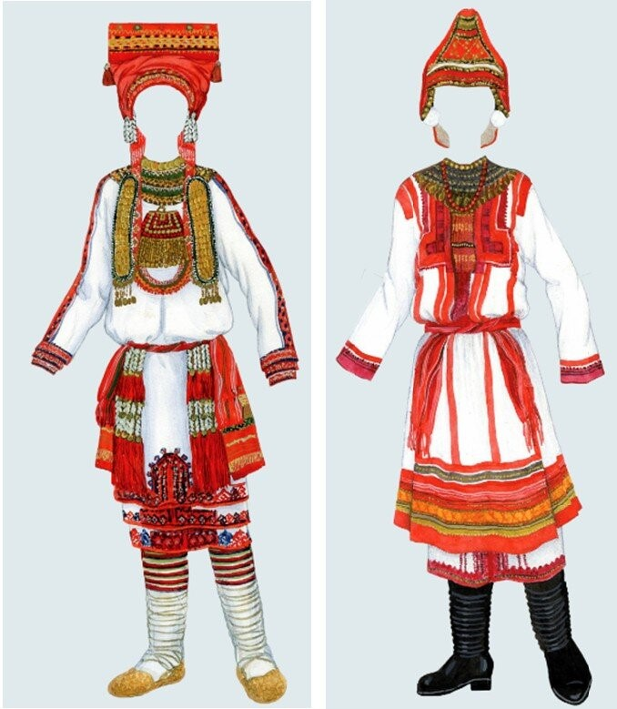
До середины XVI века мордва находилась под властью Казанского ханства, а с его падением в 1552 году
вошла в состав Российского государства.
Изначально представители народа жили в избах-полуземлянках, но со временем их традиционным жилищем
стали
полноценные избы из дерева, похожие на русские. В южных районах крыша изб была покрыта соломой, а у
зажиточных селян – тисом.
Очень красочные костюмы у мордвы, основой которых были белые рубахи. Мужской наряд состоял из рубахи
и
холщовых штанов. У эрзянок женская длинная рубашка, украшалась яркой вышивкой, подпоясанная поясом,
украшенным монетами и тканью. Особым элементом этой рубахи был пулай – своеобразный широкий пояс.
На ноги одевались плетеные тапки, а в праздники сапожки из кожи с острым носом. Опушку сапог
украшали
сафьяном в основном красных цветов. Основные элементы одежды богато украшалась монетами, бисером и
вышивкой, обшивали мехом, а на шею надевали бусы.
Обряды проводятся по праздникам и тесно связаны с традициями семьи, религией и временем года. Мордва
играет на трещотках, кларнетах, волынках, ксилофонах и флейтах. Поэзия очень тесно связана с
обрядами,
существует календарных и некалендарных жанров.
Обычаи и традиции мордвы были основаны на единении человека и природы. Они связаны с рождением
ребенка и
созданием новой семьи. У народа очень много традиций и обрядов, связанных с духами. Традиционно
народ
мордвы занимался земледелием. С самых далеких времен землю обрабатывали мотыгой. Сажали коноплю,
рожь,
горох, лен, овес, и просо. Из большей части зерна делали муку на мельницах, которые работали при
помощи
воды или ветра, некоторые были и ручными.
Особое место в национальной кухне занимает мясо, в частности, дичь. Зайчатина здесь томилась,
варилась,
коптилась, солилась и даже сушилась с древних времен. С ней делали закуски, варили супы и создавали
сытные горячие блюда, выпечку. Нередко в пару с мясом становились капуста, картошка, яблоки, репа,
зерновые и бобовые культуры.
Чуваши
Дата вхождения в состав: 1552 год.
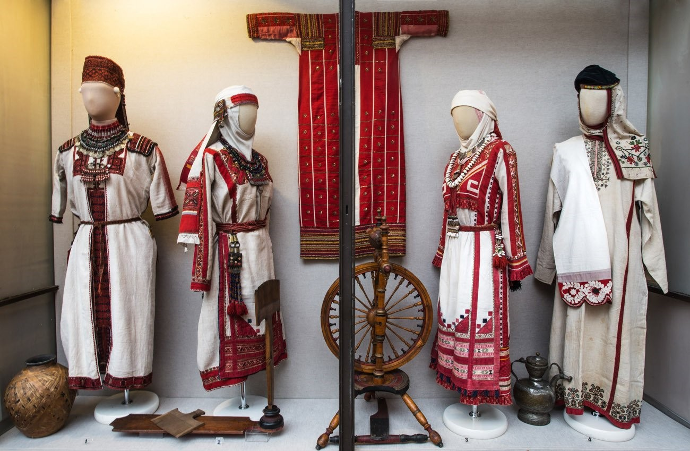
XVI—XVIII веках личная и общественная жизнь чувашей, их хозяйственная деятельность были тесно
связаны с
их языческими верованиями. Чувашские языческие верования представляли собой фантастические отражения
в
сознании людей окружающей действительности — природы и общества.
В давние времена, чуваши жили в меленьких деревнях и поселениях. Чаще всего они воздвигались в
речных
долинах, рядом с озерами. Традиционной избой была постройка пурт, которая ставилась в центре двора.
Национальная одежда не представляется без вышитого на ней строгого, но броского чувашского
орнамента. В
изделиях преобладает сочетание белого и красного цветов. Чаще всего чуваши изготавливали одежду из
домотканого полотна, кожи, войлока, овечьей шерсти или сукна. Обувь чуваши мастерили из дерева и
луба.
Белая рубаха— основа всех чувашских одеяний. Композиции чувашской нагрудной вышивки, мотивы и
техники
исполнения, имея единую этническую основу, варьируются у разных этнографических групп. Весной и
осенью
женщины спасались от прохлады легким кафтан-халатом или суконным кафтаном. Зимой чуваши надевали
штаны
из домашнего сукна и приталенную шубу из овчины со сборками на талии. Мужчины носили холстяные
туникообразные рубахи длиной до колен.
Головные уборы чуваш — уникальное явление в национальной культуре. Необычные женские шапочки,
украшенные
вышивкой, бисером, монетами, а также мужские войлочные шляпы — одни из самых узнаваемых элементов
чувашской одежды.
Большинство чувашей ходили в лаптях из липового лыка. Валенки могли позволить себе лишь зажиточные
крестьяне.
Ведущую роль в традиционном хозяйстве чувашей издавна играло пашенное земледелие. Они возделывали
рожь,
полбу, овес, ячмень, гречиху, просо, горох, коноплю, лен.
Охота играла заметную роль в занятиях чувашей. В XVI—XVII веках широко было распространено
бортничество.
В условиях господства натурального хозяйства большую часть орудий труда, транспортных средств,
одежды
чуваши изготовляли дома. Из них были ремесленники по обработке дерева и кожи, по гончарному делу,
изготовлению музыкальных инструментов.
В традиционной кухне чувашей преобладали растительные продукты. Повседневным блюдом являлся суп.
Важное
значение, особенно в обрядовой трапезе, имели каши. Мясо было сезонным продуктом, во время забоя
скота.
К праздникам готовили разного вида колбасы с начинкой из круп, мяса, крови. Стол дополняли дичь и
рыба.
Хлеб у чувашей считался священным, резать его доверялось только главе семьи или самому уважаемому ее
члену.
Марийцы
Дата вхождения в состав:
1552 год.
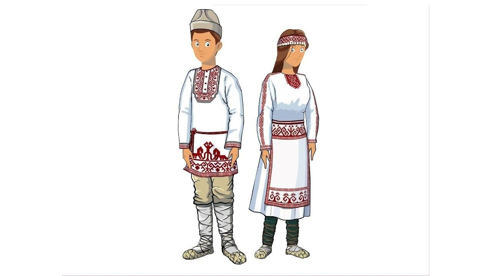
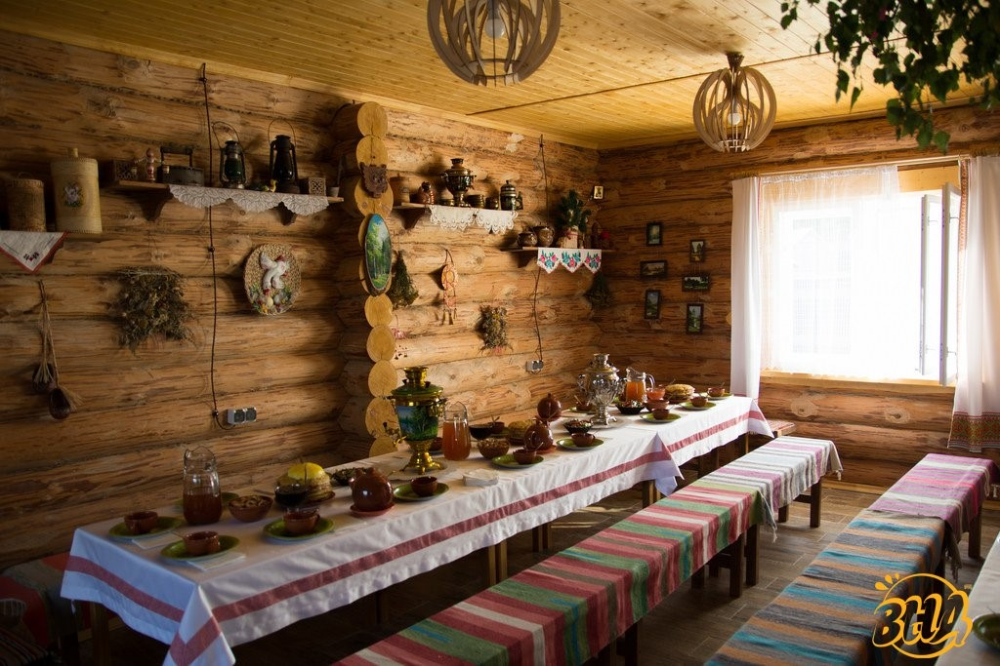
Древнейшая родина марийцев – среднее Поволжье. Достоверно известное первое упоминание о народе
относится
к середине Х века. Земли мари раскинулись по обе стороны Волги.
Жилище людей в междуречье Вятки и Велуги напоминало жилища многих других народов Восточной Европы.
Начавшись как полуземлянка, оно развилось в сруб с сенями – «пöрт». На улицу вели низкая дверь и
пара
небольших окон.
Быт марийцев был простым. Вдоль стен располагались неподвижные лавки для сна и крючья для одежды и
вещей. Стол окружали лавки и срубы, служившие стульями. После христианизации над столом стали
организовывать красный угол.
Религия марийцев включает в себя поклонение одушевленным силам природы и деление мира на реальный и
потусторонний.
Традиционные занятия черемисов накладывали серьезный отпечаток на их верования. Например, одним из
важнейших промыслов было бортничество. У него было сразу несколько богов-покровителей. Важным
занятием
была охота. Со временем добыча пушного зверя превратилась в настоящий промысел. Не менее важна была
рыбалка.
Было у мари и свое кузнечное дело. Но сами материал они не добывали, в основном, покупали у соседних
народов. Любопытно, что цветной металлургией и ювелирным искусством занимались преимущественно
женщины.
Отсюда и интересные особенности женского костюма марийцев. В частности, преобладание различных
украшений.
Одежда традиционно состояла из рубахи, штанов и кафтана. Мужчины носили шапку с широкими полями,
иногда
с сеткой от комаров. У русских позаимствовали валенки.
Ткань для национального наряда обычно создаётся из шерстяных нитей, спряденных дома. Такую ткань
называют пестрядью из-за разноцветных нитей. Затем марийские искусницы расшивают костюмы древними
узорами: птицами, конями, солярными знаками, бараньими рогами, растениями. Символика данного
орнамента
знаменует собой плодородие и обновление. Девушки изготавливали украшения из монет и бисера.
Основу традиционной марийской пищи издавна составляла продукция земледелия и животноводства, немалое
место занимал в ней и древний пласт, представленный продуктами охоты, рыболовства и собирательства.
К
числу традиционных повседневных блюд относились каши – густые из крупы, жидкие из муки. В будни кашу
варили на воде или молоке, во время праздников и при исполнении обрядов – в мясном бульоне, с
добавлением кусочков мяса и жира. Широко употреблялись в пищу молоко и молочная продукция.
Казанские татары
Дата вхождения в состав: 1552-1556 годы.
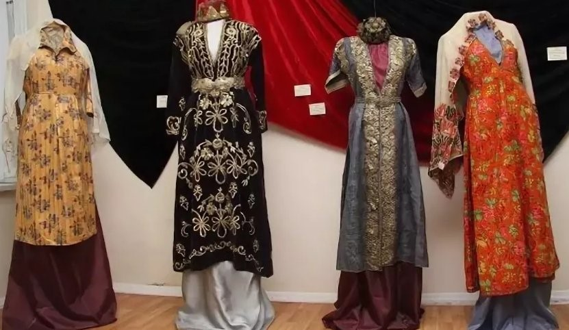
Казанское ханство в XVI веке было многонациональным государством, где сосуществовали различные
культуры
и религии. Основной религией был ислам.
Историки связывают образование казанско-татарской народности с 15–16 веками. Уже в те времена они
имели
все признаки буржуазной нации: налаженную экономику, культуру, образование. Большинство населения
занималось земледелием, другие же прославились как ювелиры, краснодеревщики, ремесленники. Традиции
казанских татар восходят к нормам шариата. Особое место в них занимает семейный уклад. Брак в исламе
—
священная обязанность. Главным в семье всегда остается старший мужчина. Казанские татары с давних
времен
любили сочинять песни, играть на музыкальных инструментах.
Татарские племена располагали свои поселения по берегам рек, вблизи больших дорог. Аулы строили
хаотично, без упорядоченной планировки.
Татарские дома представляли собой срубные строения. Иногда жилище складывали из камня, реже оно было
глинобитным. Кровлю устилали соломой, дранкой, досками. В домах делали печи, по типу русских. Их
располагали рядом со входом. Внутри жилище украшали вышитыми полотенцами, скатертями. Снаружи стены
расписывали орнаментом, отделывали резьбой.
Особо важно отметить ювелирное дело. Казанские татары создают неповторимые застежки, серьги,
браслеты.
Залогом неповторимого мастерства являются уникальные методики гравировки, литья, инкрустации,
чернения.
Бугорчатая скань — чисто казано-татарская техника, которая отличается уникальной орнаментацией. Из
кожи
мастера делают узорчатую обувь, отражающую национальный колорит. Орнаментации добивались путем
сшивания
разноцветной кожи, используя золотые и серебряные нити. Техника швов неповторима и не имеет
аналогов.
Костюм казанских татар имеет туникообразный покрой. Мужчины и женщины носят шаровары, которые внешне
похожи, но рубашки отличаются существенно: украшения женской рубахи выполняются с помощью мелких
оборок.
Поверх рубахи носили камзолы, причем у женщин они были без рукавов. Материалом для шитья выбирали
бархат, украшая борта тесьмой и мехом. Оттенки использовали яркие.
В качестве украшений использовали металлические пояса, воротниковые застежки, ажурные пуговицы,
монеты.
На протяжении многих веков татары вели оседлый образ жизни и занимались животноводством — одна из
особенностей их кухни — большое количество блюд из мяса и разнообразие молочных изделий.
В татарской кухне особое место занимают горячие блюда. Это прежде всего супы. Они могут быть
молочными,
постными и мясными.
Астраханские татары
Дата вхождения в состав: 1556 год.
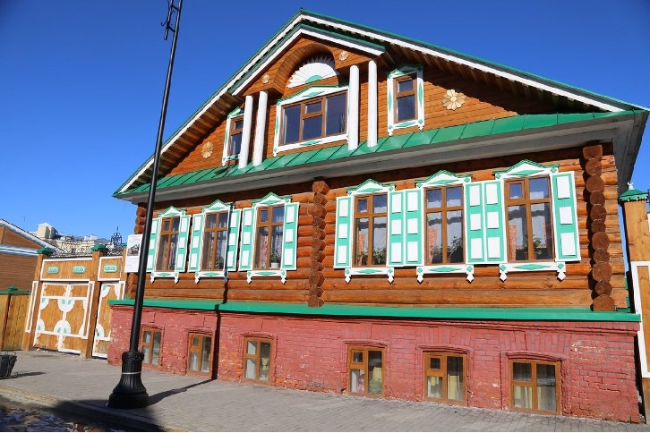
Среди народов Астраханского ханства, вошедшего в состав России в 1556 году, были татары и ногайцы.
Население Астраханского ханства исповедовало ислам. После завоевания русскими религия сменилась на
православие, хотя в регионе до сих пор существуют мусульманские общины.
Астраханские татары все обряды выполняют в том виде, как они передавались от их предков. Самый
масштабный обряд — свадебный. Как и у многих других народов, обряды и праздники татарского народа во
многом зависели от сельскохозяйственного цикла.
Традиционным жилищем татар Среднего Поволжья и Приуралья была срубная изба, отгороженная от улицы
забором. Внешний фасад украшался многоцветной росписью. У астраханских татар, сохранивших некоторые
свои
степные скотоводческие традиции, в качестве летнего жилища бытовала юрта.
Основное занятие жителей — кочевое скотоводство и торговля, сочетавшиеся с рыболовством,
слаборазвитым
земледелием и добычей соли. Население ханства в основном было сосредоточено в дельте Волги. Выгодное
местоположение и отсутствие конкуренции способствовало восстановлению торговых связей Астрахани с
Хорезмом, Бухарой, Казанью.
Астраханские ханы обладали определенными книжными собраниями. Этому способствовали связи с соседними
мусульманскими регионами. В ханстве были широко известны классические произведения мусульман,
татарские
сочинения касательно истории Астрахани.
Одежда мужчин и женщин состояла из шаровар с широким шагом и рубашки (у женщин дополнялась вышитым
нагрудником), на которую надевался безрукавный камзол. Верхней одеждой служили казакин, а зимой —
стёганый бешмет или шуба. Головной убор мужчин — тюбетейка, а поверх неё — полусферическая шапка на
меху
или войлочная шляпа; у женщин — вышитая бархатная шапочка (калфак) и платок. Традиционная обувь —
кожаные ичиги. Для костюма женщин было характерно обилие металлических украшений.
Издавна татары занимались оседлым земледелием и животноводством, что способствовало преобладанию в
пище
мучных и мясомолочных блюд. Любимым мясом у татар всегда считалась баранина. Наравне с ней готовили
блюда из говядины, конины, мяса домашних птиц (кур, уток и гусей). Мясо ели варёным, солёным и
вяленым,
в виде колбасы (казылык).
В татарской кухне также много молочных блюд. Символом благополучия и достатка у татар служил хлеб,
который раньше пекли 2-3 раза в неделю. Не менее древним является бэлеш – большой пирог из пресного
или
дрожжевого теста с начинкой из кусочков жирного мяса с крупой или картофелем.
Башкиры
Дата вхождения в состав: начиная с 1557 года постепенно.
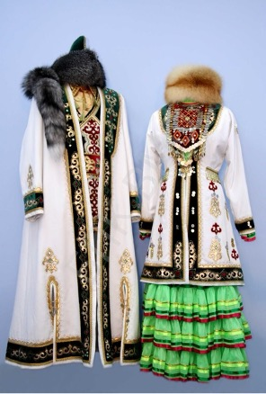
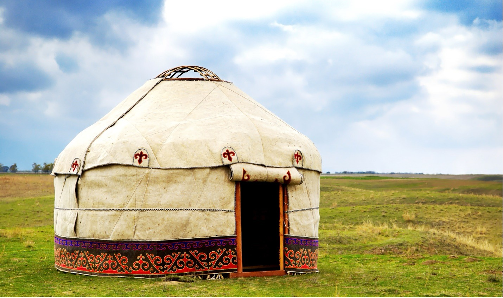
Присоединение башкирских территорий к Российскому государству не было единовременным. К концу
XV-нач.
XVI вв. окончательно сложилась башкирская народность и сформировались её основные этнические
признаки.
Башкиры, как и многие кочевые народы, около половины своей жизни проводили во временных жилищах,
самым
древним и самым универсальным видом которых была решетчатая юрта - теплая в стужу, прохладная в
жару.
Жилище башкир строилось на основе каркаса, который забивали землёй, деревом, глиной или соломой.
Фундамент клали из камней и брёвен. Пол чаще всего был дощатым. Отапливали дом с помощью каминной
печи
чувал.
Башкиры празднуют мусульманские праздники и чтут все традиции, следуя религии. Одним из самых старых
праздников является прилет грачей, который символизирует приход весны. Башкиры просят о плодородии
земель, урожае, устраивают пышные хороводы и гулянья. Примечательным праздником является Сабантуй,
знаменующий начало работ в полях.
Кочевой образ жизни башкир в древности во многом определял и национальную кухню башкир, он привёл к
формированию широкого ряда продуктов длительного хранения. Основную массу башкирских национальных
блюд
составляют отварная, сушёная и вяленая конина, баранина, молочные продукты, сушёные ягоды, сушёные
злаки, мёд.
Одежда башкир зависела от возраста и региона. Шили её из овчины и домотканых (иногда — покупных)
тканей.
И женщины, и мужчины носили штаны с широким шагом. Особенностью у башкир была многослойность верхних
одежд. Башкиры на нижнюю одежду надевали несколько слоев верхней – несколько халатов.
Традиционными занятиями башкир являлись скотоводство, земледелие; важную роль в хозяйстве играли
бортничество, охота, рыболовство, а также промыслы и ремесла. Из зерновых культур возделывали рожь,
ячмень, овёс, пшеницу, просо, полбу, гречиху. Опытные мастера занимались производством орудий труда,
домашней утвари. Были известны различные способы плавки, ковки, литья; при ювелирной обработке
металла
применялись серебрение, чернение, чеканка, насечка и др.
Удмурты
Дата вхождения в состав: 1558 год
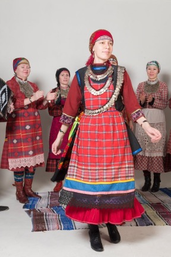
Селились удмурты поближе к воде: вдоль рек и вблизи родников. Традиционное жилище удмуртов — корка —
это
бревенчатая изба с холодными сенями. Углы дома рубили «в обло», пазы прокладывали мхом или куделью.
Глинобитную печь (гур) ставили у входа устьем к фасадной стене. На шестке устраивали очаг с котлом
для
приготовления пищи.
Несмотря на то, что официально большинство удмуртов исповедует православие, среди них до сих пор
сохранились остатки языческих верований. Самым главным и древним богом язычников-удмуртов является
бог
неба Инмар.
Как и каждый народ, чья жизнь зависит от сельского хозяйства, удмурты отмечают календарно-обрядовые
праздники, в которых участвует вся община. Весенне-летние обряды у населения связаны с тем, что
крестьяне просят у богов благословения на новый сельскохозяйственный сезон.
Предки удмуртов занимались земледелием, охотой, рыболовством и бортничеством. Традиционные мужские
ремесла и промыслы — рубка леса, заготовка древесины, смолокурение, углежжение, деревообработка.
Женские
занятия - прядение, вязание, вышивка и ткачество.
Удмуртская одежда изготавливалась дома, в основном из холста, сукна и овчины. Костюм северной
удмуртки
состоял из белой холщовой рубахи со съемным вышитым нагрудником, поверх надевался холщовый белый
халат с
поясом и передник без грудки. Обувью были плетеные лапти, башмаки или валенки.
Главными повседневными кушаньями удмуртов были хлеб, разнообразные супы и каши. Блюда из мяса и
молока
готовили, как правило, в холодный период — осенью и зимой. Овощи ели сырыми, вареными, печеными и
тушеными, из них готовили начинки для пирогов и пельменей. Масло, сметана, яйца и мед были
праздничной и
ритуальной пищей. Рацион питания Удмуртов составляли растительные продукты в сочетании с животными.
Занимаясь собирательством, Удмурты готовят пищу из грибов, ягод и трав.
Важное место в жизни удмуртской деревни играли календарно-обрядовые праздники. В праздничных
народных
гуляниях и развлечениях нередко участвовал весь гурт. В весенне-летних обрядах удмурты испрашивали
благословения на проведение земледельческих работ. На осенне-зимних праздниках — благодарили за
собранный урожай и просили дальнейшего благополучия. Новый год у удмуртов начинался вместе с
земледельческими работами.
Ханты и манси
Дата вхождения в состав: 1594 год, дата основания Сургута.
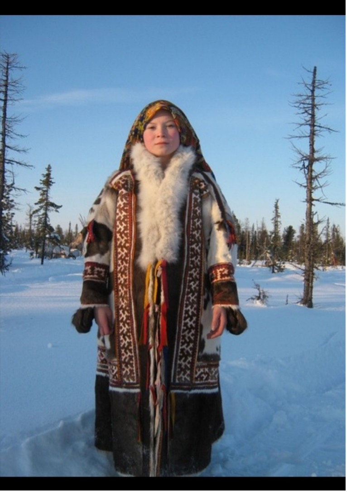
Жизнь обско-угорских народов с древних времен была приспособлена к нелегким условиям Севера.
Традиционное жилище зимой – прямоугольные срубленные дома или дома в виде пирамид, нередко с
земляной
крышей. Отапливались зимние постройки открытым глинобитным очагом-чувалом или железной печкой. Летом
строили каркасные берестяные дома и чумы из оленьих шкур. Посуда, мебель, игрушки делались из
дерева.
Огромное количество вещей делалось из бересты. Оленеводы, кочуя со стадами оленей, жили на стойбищах
в
чумах, зимой крытыми оленьими шкурами, летом из бересты. В чумах жили и рыболовы.
Хантыйские и мансийские мастерицы шили одежду из различных материалов: оленьего меха, птичьих
шкурок,
пушнины, овчины, сукна, крапивного и льняного холста, хлопчатобумажной ткани. Местные рукодельницы
искусно украшали одежду, вышивали бисером. В меховой одежде сочетаются белый и темный цвета, отделка
цветным сукном (красным, зеленым).
Летом традиционный костюм женской одежды были платья, распашные халаты. Зимой они одевали глухую
одежду
из оленьих шкур двойные шубы. Мужская одежда – рубаха, штаны. Мужчины зимой также одевали глухую
одежду:
малицы и гуси с капюшоном.
Основной пищей обских угров считается рыба, ее употребляют круглогодично в сыром, вареном, вяленом,
копченом, сушеном, жареном и соленом виде. В летнее время варят уху, коптят, вялят и солят рыбу. В
зимнее время излюбленным кушаньем является строганина.
Второй продукт питания ханты и манси – мясо. Мясо оленя и лося употребляют в пищу сырым, вареным,
жареным, вяленым и копченым. В летнее время в пищу употребляют ягоды.
Основными занятиями народа ханты являются рыболовство, охота, скотоводство.
Ханты и манси стали заниматься оленеводством с 13–15 веков, обучившись этому занятию у северных
соседей
– ненцев.
Охотничий промысел разделялся на мясной (на крупного зверя или птицу) и пушной. Основную роль играл
пушной промысел, на первом месте которого стояла белка, а в отдаленном прошлом – соболь.
Традиционными ремеслами для народа ханты являются: резьба по кости, дереву; изготовление берестяных
изделий; плетение из травы, камыша, прутьев; кузнечное дело.
Ханты и манси
Дата вхождения в состав: 1594 год, дата основания Сургута.
Жизнь обско-угорских народов с древних времен была приспособлена к нелегким условиям Севера.
Традиционное жилище зимой – прямоугольные срубленные дома или дома в виде пирамид, нередко с
земляной
крышей. Отапливались зимние постройки открытым глинобитным очагом-чувалом или железной печкой. Летом
строили каркасные берестяные дома и чумы из оленьих шкур. Посуда, мебель, игрушки делались из
дерева.
Огромное количество вещей делалось из бересты. Оленеводы, кочуя со стадами оленей, жили на стойбищах
в
чумах, зимой крытыми оленьими шкурами, летом из бересты. В чумах жили и рыболовы.
Хантыйские и мансийские мастерицы шили одежду из различных материалов: оленьего меха, птичьих
шкурок,
пушнины, овчины, сукна, крапивного и льняного холста, хлопчатобумажной ткани. Местные рукодельницы
искусно украшали одежду, вышивали бисером. В меховой одежде сочетаются белый и темный цвета, отделка
цветным сукном (красным, зеленым).
Летом традиционный костюм женской одежды были платья, распашные халаты. Зимой они одевали глухую
одежду
из оленьих шкур двойные шубы. Мужская одежда – рубаха, штаны. Мужчины зимой также одевали глухую
одежду:
малицы и гуси с капюшоном.
Основной пищей обских угров считается рыба, ее употребляют круглогодично в сыром, вареном, вяленом,
копченом, сушеном, жареном и соленом виде. В летнее время варят уху, коптят, вялят и солят рыбу. В
зимнее время излюбленным кушаньем является строганина.
Второй продукт питания ханты и манси – мясо. Мясо оленя и лося употребляют в пищу сырым, вареным,
жареным, вяленым и копченым. В летнее время в пищу употребляют ягоды.
Основными занятиями народа ханты являются рыболовство, охота, скотоводство.
Ханты и манси стали заниматься оленеводством с 13–15 веков, обучившись этому занятию у северных
соседей
– ненцев.
Охотничий промысел разделялся на мясной (на крупного зверя или птицу) и пушной. Основную роль играл
пушной промысел, на первом месте которого стояла белка, а в отдаленном прошлом – соболь.
Традиционными ремеслами для народа ханты являются: резьба по кости, дереву; изготовление берестяных
изделий; плетение из травы, камыша, прутьев; кузнечное дело.
Ненцы
Дата вхождения в состав: 1595 год, дата основания Салехарда.
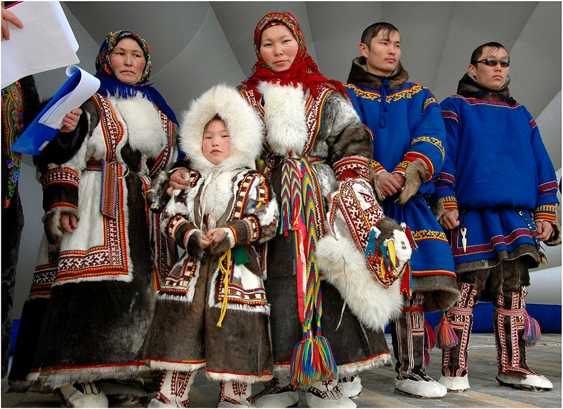
Народ ненцы проживает на территории евразийского побережья Северного Ледовитого океана, от Кольского
полуострова до Таймыра. Упоминания об их племенах встречаются ещё у летописца Нестора в «Повести
временных лет». В числе прочих народов Севера он перечисляет и ненцев.
Традиционная религия — анимизм. Ненцы верили, что весь мир наполнен духами, у озер, рек и явлений
природы есть духи-хозяева. От них зависит жизнь человека и удача в промыслах. Ненцы приносили духам
пожертвования, чтобы сдобрить их. В религиозной жизни ненцев наблюдается синкретизм — смешивание
языческих и христианских представлений о мире. Большинство ненцев отмечают православные праздники,
имеющие тесную связь с циклом их календарных работ.
С древних времен все ненцы живут в чумах. Для народа чум представляет собой не только жилье, но и
является моделью мира в миниатюре. Отверстие наверху символизирует связь с луной и солнцем, шесты —
воздушную сферу, которая окутывает Землю. В самом центре чума расположен очаг, где готовят еду. По
обе
стороны очага — спальные места, напротив входа в жилище расположены культовые предметы и посуда. Из
мебели есть только большой стол. Вместо кроватей оленьи шкуры, которые расстилают на циновках поверх
широких досок. Зимой чум покрывают шкурами оленей. Летом шкуры снимают и покрывают жилище берестой.
Основными занятиями ненцев издавна являются оленеводство, охота и рыболовство.
Олени дают народу мясо и жир для питания. Часто оленину засаливают и хранят долгое время. Такое мясо
едят сырым, коптят, вялят. Кроме оленины ненцы едят говядину, свинину, морских зверей, пресноводную
рыбу. Строганину делают из сига, печени и оленьего мяса. Главное предназначение одежды ненцев —
защищать
от суровых морозов зимой и кровососущих насекомых в летний период. Для пошива одежды используется
шкура
оленя с мехом. Одежду украшают вышивкой и орнаментом. Мужчины носят малицу с пришитым к ней
капюшоном и
рукавицами. Она очень теплая и хорошо согревает голову и тело. Шьют и надевают малицу мехом внутрь,
украшают вышивкой, подпоясывают поясом из кожи, обшитым красным сукном, с двумя или тремя рядами
медных
пуговиц. Одежда женщин более сложная и состоит из распашной шубы паны. Подпоясывается верхняя одежда
длинным тканевым поясом, богато украшенным кисточками и медью. В качестве головного убора женщины
носят
меховой капор, который не скрепляют с шубой.
Коми
Дата вхождения в состав:
1471 год.
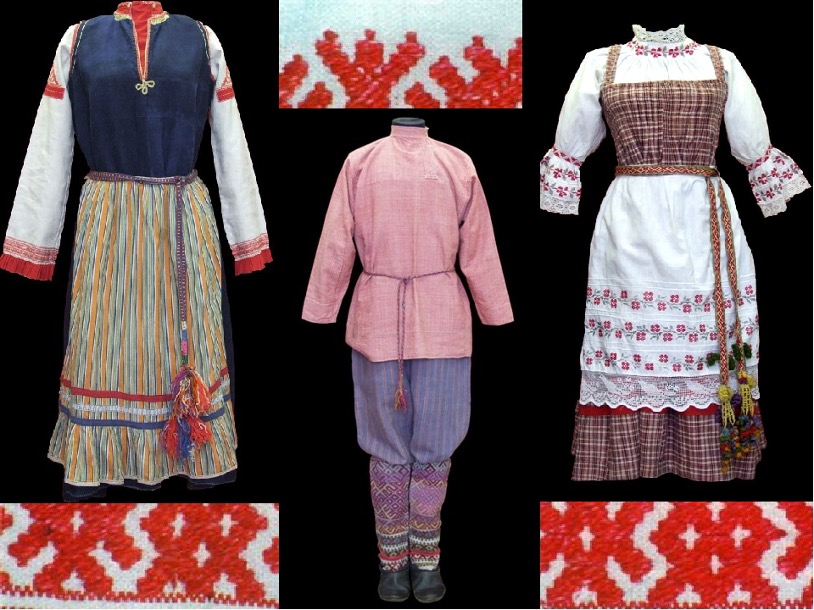
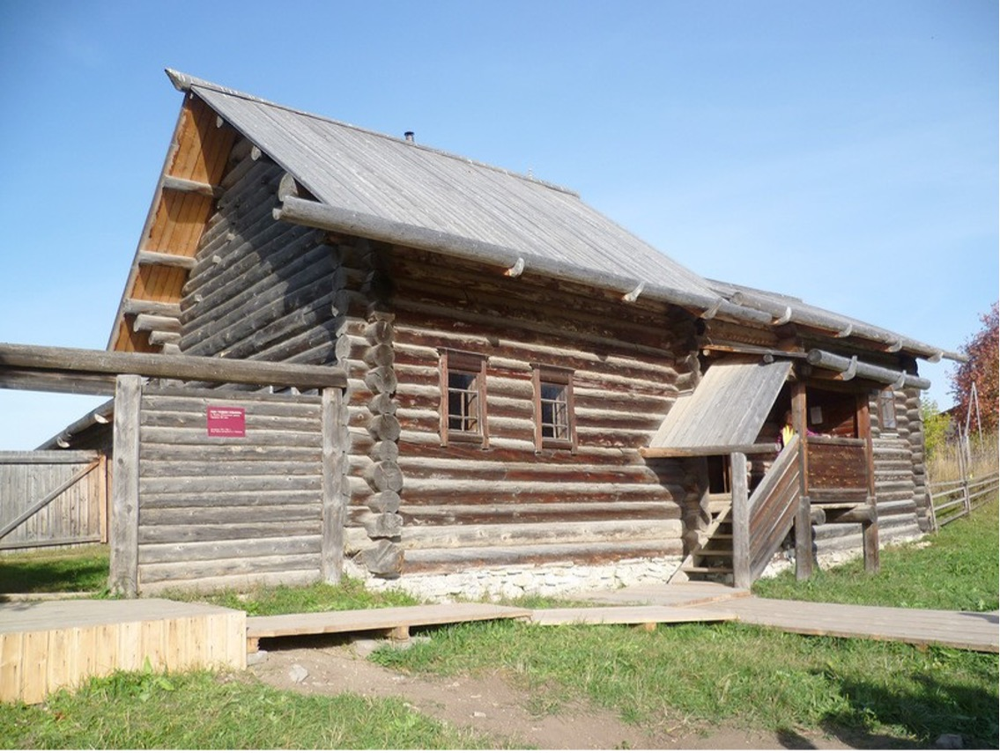
Народ коми начал историю своего существования в IV веке н.э. В XV веке Московское княжество включило
в
себя земли коми. Развитие народа в экономическом отношении осложнялось отсутствием успешной
торговли.
Такая ситуация продолжалась до XVI века.
Главной религией народа является православие. До появления христианства народ исповедовал язычество
и
поклонение природным стихиям: огню, воде и другим явлениям.
Самым популярным в древние времена жилищем коми была наземная постройка, чаще из сруба сосны. Крышу
делали односкатную. Традиционно каждая семья имела два дома – на зиму и на лето. Крыша для двух
жилых
помещений была цельной.
Внутри жилого дома располагалась печь, над которой коми устанавливали красный угол. Комнаты были
украшены очень просто, но интересно. Для декора использовались ткани с орнаментом, на оконных
затворках
вырезались различные узоры.
Огромные леса российского Севера сформировали главный вид деятельности народа - обработку дерева. Из
дерева строились дома и помещения разной сложности, изготавливалась посуда и предметы для декора.
Женщины коми – мастерицы в гончарном ремесле. Также женщины умело делали различные узоры на ткани.
Своими руками они искусно изготавливали рубашки, скатерти, полотенца для свадебных церемоний.
Костюмы коми также интересны, в них прослеживаются отблески ненецких и северорусских традиций. Самой
главной одеждой для женщины являлся сарафан, для мужчины – рубаха. На работу летом надевали дубник,
а
зимой - шубу.
Для особых торжеств коми заранее шили одежду и украшали ее. Использовали преимущественно шелковые
ткани.
На голову девушкам было принято надевать парчовую ленту и подвязывать к ней другие небольшие
ленточки.
Мужская рубаха всегда подпоясывалась ремнем. Штаны делали из плотной ткани. Летом мужчины надевали
кафтан, а зимой шубу. Вся мужская одежда украшалась национальным орнаментом.
Кухня коми – простая и сытная: различные каши и супы, похлебки из мяса. Часто готовится мясо диких
животных, приветствуются рыбные блюда. На земле люди выращивают различные овощи и картофель.
Карелы
Дата вхождения в состав:
1323 год.
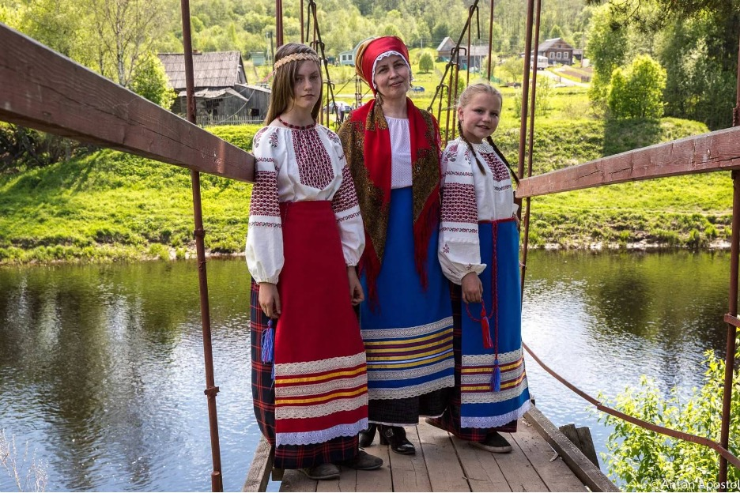
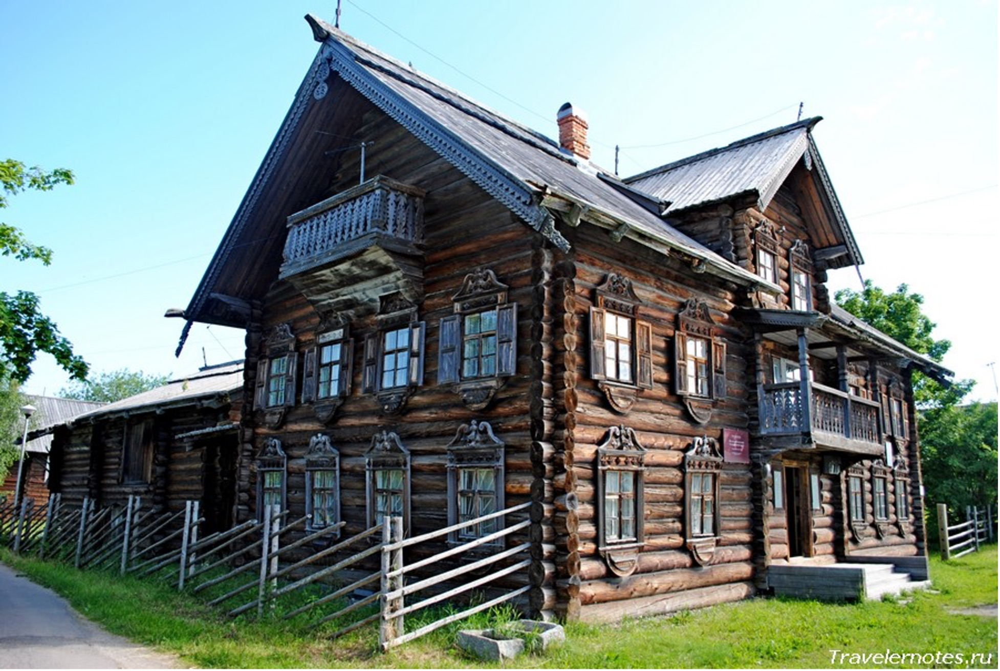
Карелы — очень древний народ. Первые документальные упоминания о них можно найти в берестяной
грамоте
новгородцев, написанной между 1075 и 1100 годами, где сказано: «Литва пошла войной на карел».
Изначально карелы были язычниками. На территории проживания карелов образовался уникальный тип
религии
карелов, объединявший в себе традиции и обычаи языческих и христианских верований.
Карелы строили очень прочные дома из дерева. Каждый дом был украшен резными ставнями, балконами и
наличниками на дверях. У каждой семьи была построена баня. Внутри дома недалеко от главного входа
всегда
была печь. Посредине дома стоял стол со скамейками. На стенах всегда были полки для различных
домашних
предметов. При появлении малыша к потолку прикрепляли люльку.
Основными занятиями карелов были рыбная ловля и охота. Также они разводили лошадей, овец, коров,
оленей.
Из шкур животных шили одежду. Карелы занимались и возделыванием земли. Были распространены рожь,
ячмень,
овес, также сажали горох. Карелы добывали железную и медную руду, знали ковку, литье. Они работали с
бронзой, медью, серебром. Из металла делали оружие, предметы быта. Еще одним занятием карелов
является
выделка кожи. Они умели ткать полотно и изготавливать красивые гончарные изделия.
Повседневная одежда карелов была скромной. Традиционный женский костюм включал такие элементы:
льняная,
холщовая рубаха свободного кроя, длинная широкая юбка из простого материала, передник или сарафан.
Обувью служили лапти. Праздничный наряд был гораздо красивее обычного. Рубахи украшали вышивкой,
лентами. Поверх костюма накидывали длинный суконный или льняной палантин с бахромой. Голову украшали
ажурной или расшитой повязкой. На шею надевали бусы, ожерелья, подвески. В праздничной одежде
преобладали детали красного цвета, контрастная вышивка.
Мужчины носили льняные или суконные штаны, которые заправляли в кожаные сапоги. Свободная длинная
рубашка-туника подпоясывалась ремнем. Сверху надевался кафтан. В зимнее время года носили шубы из
овчины, меховые шапки, рукавицы. Традиционной зимней обувью были валенки.
Близость финской территории сильно повлияла на карельскую кухню. Раньше главными продуктами были
мясные
и рыбные блюда. После того, как люди научились выращивать зерно и завели скот, их рацион значительно
расширился. Мясо и рыбу солят, маринуют, вялят, коптят, тушат, запекают.
Саамы
Дата вхождения в состав:
1593 год.
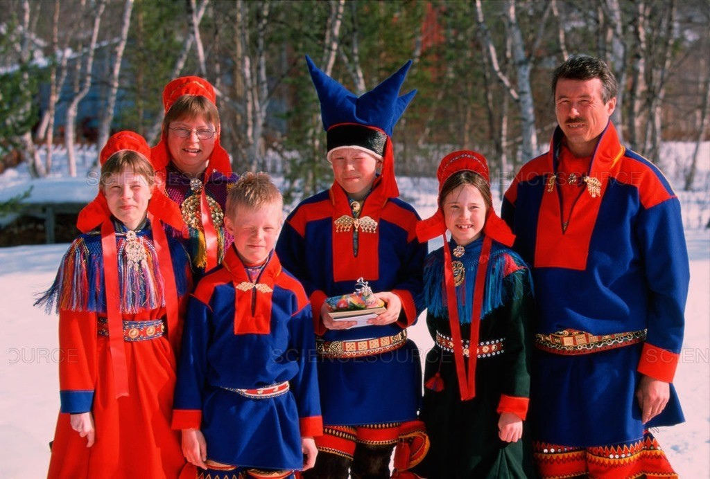
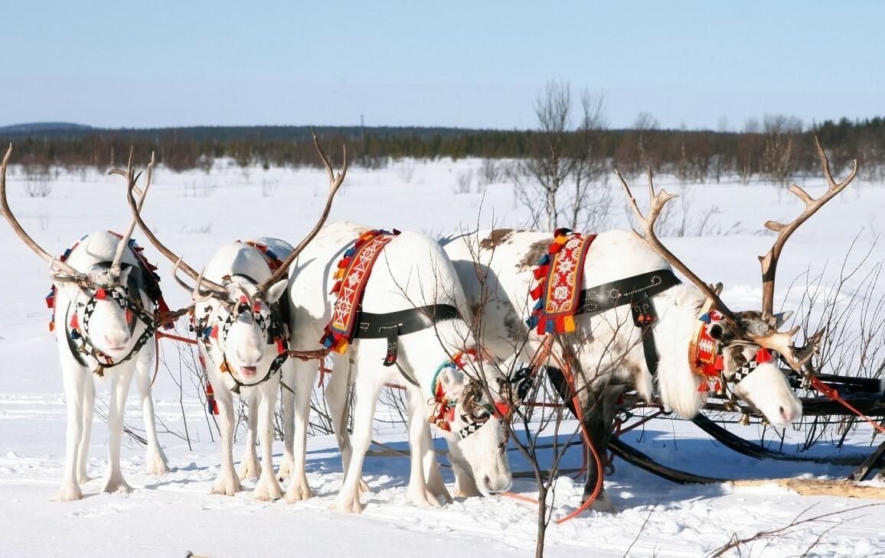
Саамы или саами – это малочисленный финно-угорский народ Северной Европы. Первое упоминание о саамах
встречается в новгородской летописи в 1216 году. Оседлые саамы живут на Кольском полуострове, на
берегах
Белого и Баренцева морей. Традиционно у саамов было три культа: промысловый, культ предков, культ
идолов.
Народ саамы носили холщовую, суконную прямого кроя рубаху. Ее украшали бисером, цветными лоскутами.
Мужчины подпоясывали её кожаным поясом, на который крепились огниво, нож, амулеты и кошель. Плотные
штаны из оленей замши носили мужчины и женщины. Зимняя одежда саамов из оленьих либо овечьих шкур
мехом
внутрь называется торк.
Для оседлой жизни саамы строили дома из досок, бревен, а пол и стены покрывали оленьими шкурами. В
потолке делали дырку для дыма. Каменный очаг выкладывали в центре комнаты. Их постройки
прямоугольной
или квадратной формы всегда имели дверь на юг.
Рыбная ловля — один из главных промыслов этого народа, помимо охоты и оленеводства. Рыболовство
является
древнейшим занятием саамов, более древним, чем оленеводство. Впрочем, оленям отводилась особенная
роль —
они служили пищей, транспортом (саамы передвигались на оленьих упряжках), их шкурами накрывали чумы,
также из шкур шили одежду.
Питается северный народ рыбой, оленьим мясом и молоком, а также блюдами, приготовленными на их
основе.
Оленина используется жареная, вареная, вяленая и сушеная. Важное место в рационе занимают ягоды.
Саамы известны своим богатым фольклором, включающим песни, сказки и легенды. Саамы проводят
различные
праздники и обряды, связанные с природой.
Славяне
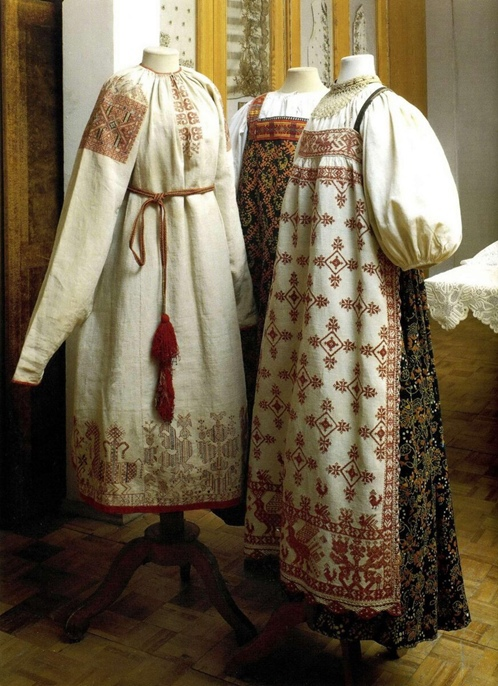
Древние славяне населяли Центральную и Восточную Европу. Восточные славяне — это славянская
этническая
группа, которая расселилась в Восточной Европе на территории современной России, Украины и Беларуси.
Православие преобладает среди восточных и южных славян. Селились славяне обычно по берегам рек и
озёр на
обширных пространствах. Дома были устроены довольно скромно и просто. Проживали люди в деревянных
полуземлянках, где вся домашняя утварь была также сделана из дерева — домашняя посуда, скамьи и
столы.
Основным занятием славян было земледелие. Древние славяне выращивали рожь, пшеницу, ячмень, овёс,
просо,
бобы, горох. С земледелием тесно переплеталось скотоводство. Славяне преимущественно разводили
свиней,
коров, мелкий рогатый скот.
Восточные славяне занимались рыболовством, бортничеством, охотой, особенно ценилась добыча пушного
зверя
(белки, куницы, соболя). Существовали различные виды ремёсел (кузнечное, ткацкое, гончарное).
Мастера
занимались обработкой металлов, изготовлением орудий труда из железа, а также украшений из
драгоценных
металлов.
Основу стола древних славян составляли хлебные, мучные изделия и блюда из зерна. Хозяйки пекли блины
и
ржаные пироги, варили мучные кисели. Ни одно торжественное событие в семье не обходилось без вкусных
изделий из теста. Начинка у пирогов была самая разная – рыба, мясо, птица, грибы, ягоды, творог,
овощи,
фрукты и даже каши. Дорогого гостя встречали караваем и солью. Молоко и мясо до XVII в. ели весьма
редко. Мясо варили в щах или кашицах и до XVI в. почти не жарили. Каши на Руси служили предметом
поклонения и символом домашнего благополучия. Овощи - капусту, репу, редьку, горох, огурцы - либо
ели
сырыми, либо солили, парили, варили или пекли. Значительную роль в питании играли грибы - вареные,
сушеные, печеные.
Основной одеждой в XVI веке была рубаха. Рубахи шились из шерстяной ткани и льняного и конопляного
полотна. Рубахи носились обязательно с определенными украшениями из жемчуга, драгоценных камней,
золотых
и серебряных нитей у богатых и знатных. Украшениями покрывали концы рукавов и низ подола рубах.
Штаны
были обязательным элементом мужской одежды. Сапоги - обувь знатных, богатых; калиги, поршни - обувь
крестьян и горожан. Наибольшим разнообразием отличалась женская одежда. Самым распространённым был
сарафан. Другой тип верхней женской одежды – понёва и плахта. Плахтой называлась одежда в виде юбки,
из-под которой выглядывал подол рубахи.